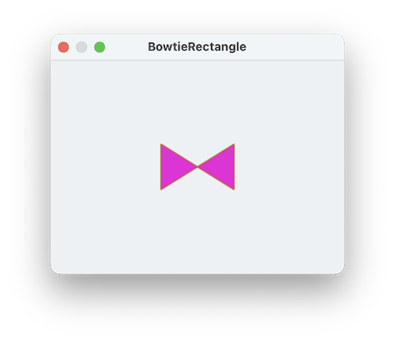

There are other ways to specify vertices of a polygon. Although radial coordinates are often convenient, using x and y coordinates works fine as well: This script makes a nice golden rectangle
set yc to 20
set xc to yc * 1.61
tell application "SinterPixels"
if not (exists document 1) then make new document
tell document 1
set p to make new polygon with properties {position: {0,0}, vertices:{{xc,yc},{-xc,yc},{-xc,-yc},{xc,-yc}} }
end tell
end tellBeing able to specify the vertices individually means there no need for them to go smoothly around a circle. Here's the same script with the order of the vertices jumbled:
set yc to
set xc to yc * 1.61
tell application "SinterPixels"
if not (exists document 1) then make new document
tell document 1
set p to make new polygon with properties {vertices:{{xc,yc},{-xc,-yc},{-xc,yc},{xc,-yc}}
end tell
end tellwhich makes a very nice looking bowtie:

Note: Although this looks like two separate triangles, it is instead a single rectangle. We've taken a regular golden rectangle ABCD and instead drawn it as ACBD. Because it is a golden rectangle, the resulting triangle shapes are regular equilateral triangles.